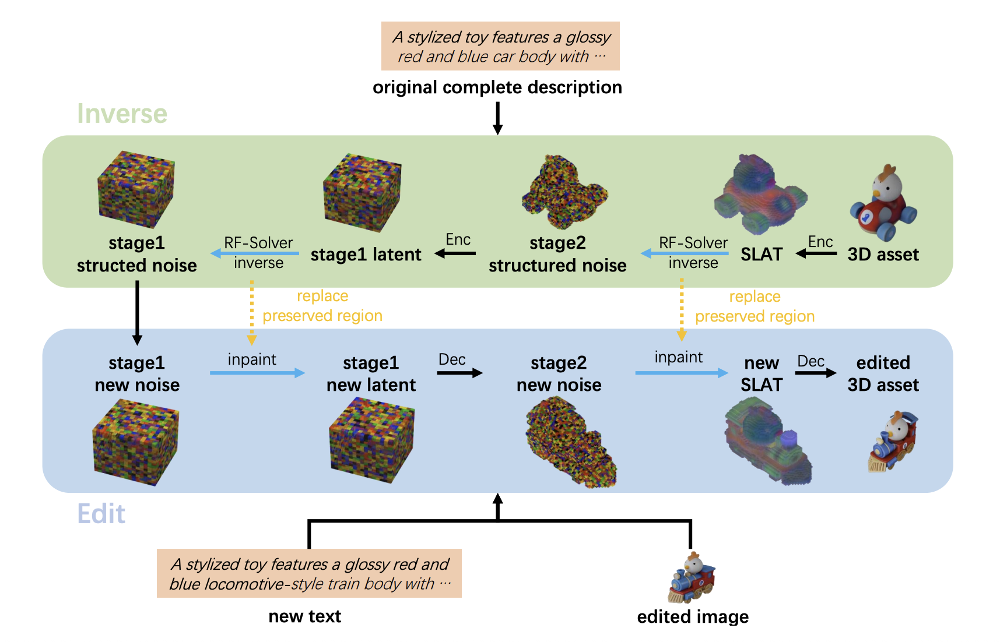

Given a 3D asset and an editing prompt, Vinedresser3D first uses a multimodal large language model (MLLM) to interpret the instruction: it describes the original asset, determines the edit type (addition, modification, or deletion), and generates decomposed textual and visual guidance. A segmentation model then partitions the asset into parts, and the MLLM identifies the specific region to edit. With this guidance and region in hand, an inversion-based editing pipeline carries out the edit directly in 3D latent space.

Specifically, the pipeline first inverts the original 3D asset back to structured noises, conditioned on the original description. It then performs editing through inpainting, denoising with Trellis-text and Trellis-image alternately at each timestep, using both the new textual and edited visual guidance as conditions.